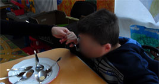
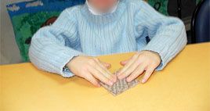

|
Présentation S.E.S.S.A.D. |
 |
|
Mardi, 01 Octobre 2013 00:00 |
|
|
Le SESSAD s'adresse aux enfants et adolescents déficients intellectuels âgés de 3 à 18 ans orientés par la Maison Départementale des Personnes Handicapées (MDPH) de Seine et marne.
Ses missions :
Accompagner l'enfant et sa famille
Favoriser l'insertion scolaire et sociale
Maintenir l'enfant dans son lieu de vie habituel
|
|
L'admission est prononcée par le Directeur à la demande de la famille et doit être notifiée par la MDPH.
Un contrat d'accompagnement est élaboré avec la famille dès l'admission et les interventions sont prises en charge par la sécurité sociale
|
|  |
ce projet individualisé vise à répondre aux besoins spécifiques de chaque enfant, à valoriser ses potentialités.
|
 |
|
Un projet éducatif, pédagogique et thérapeutique :
Un éducateur référent est nommé pour chaque enfant et les interventions se déroulent à domicile, à l'école, au S.E.S.S.A.D. sous la forme de :
Ateliers éducatifs
Sorties éducatives
Accompagnements individuels
Visites à domicile
Soutien pédagogique
Entretiens psychologiques
Séances de psychomotricité
Consultations médicales
Le SESSAD est partenaire des établissements d'enseignement scolaire et de formation professionnelle, il oeuvre avec les centres de guidance infantile, la protection maternelle et infantile, le planning familial, l'unité d'action sociale, l'aide sociale à l'enfance et les services de prévention.
Il s'appuie sur des structures ressources telles que les centres de loisirs et les associations.
|
 |
|
|
Mise à jour le Mardi, 01 Octobre 2013 10:13 |